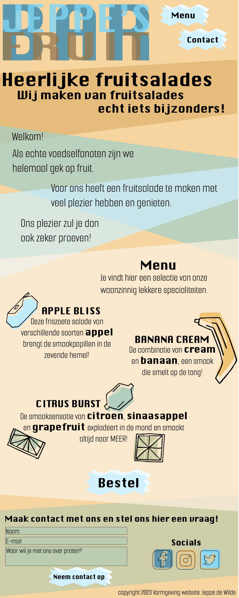
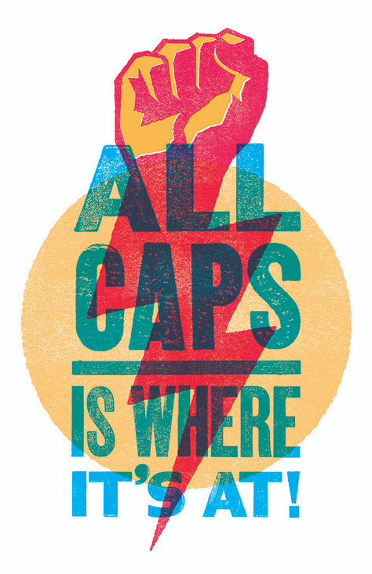
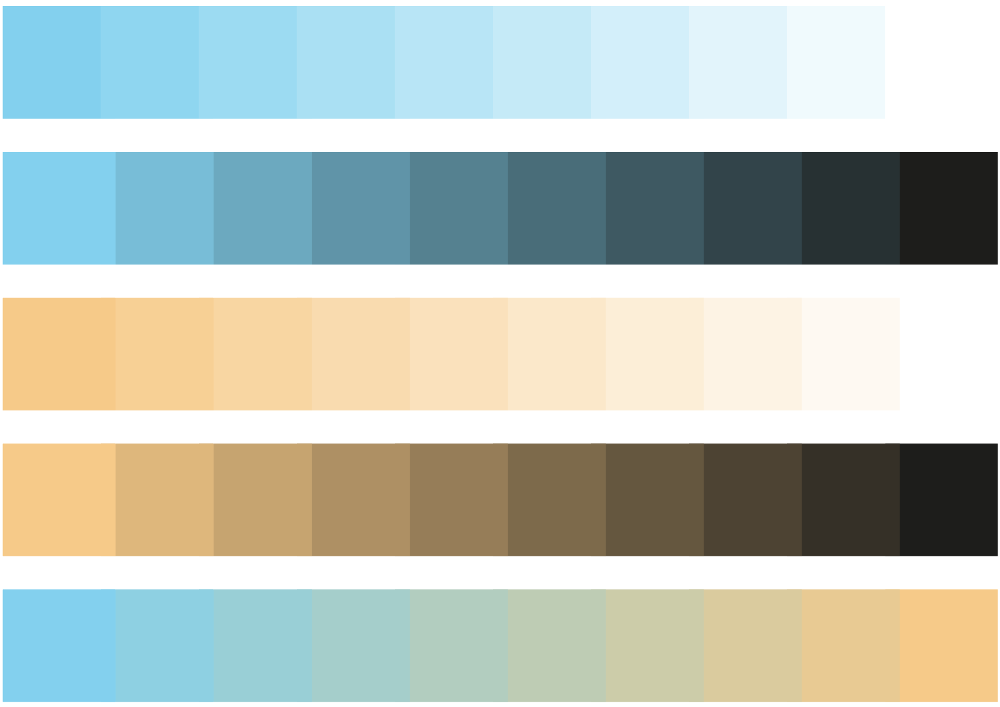
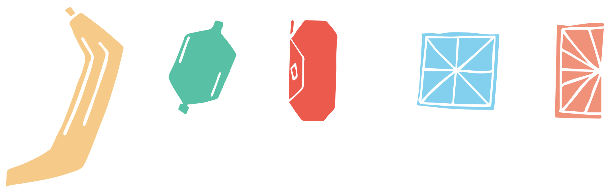
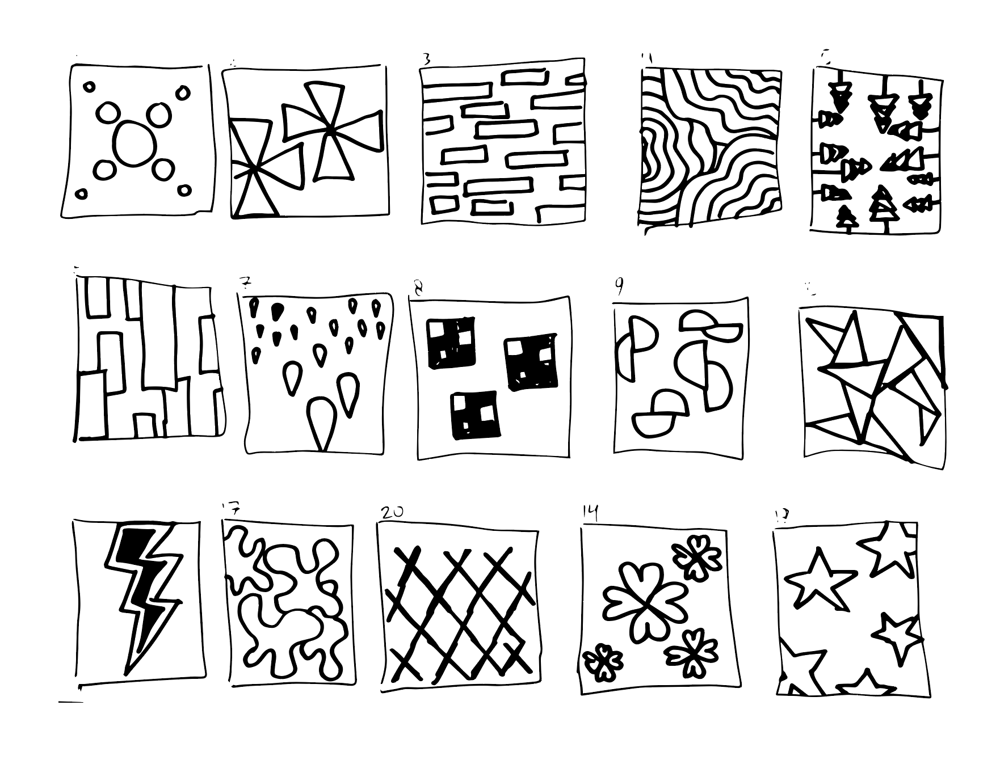
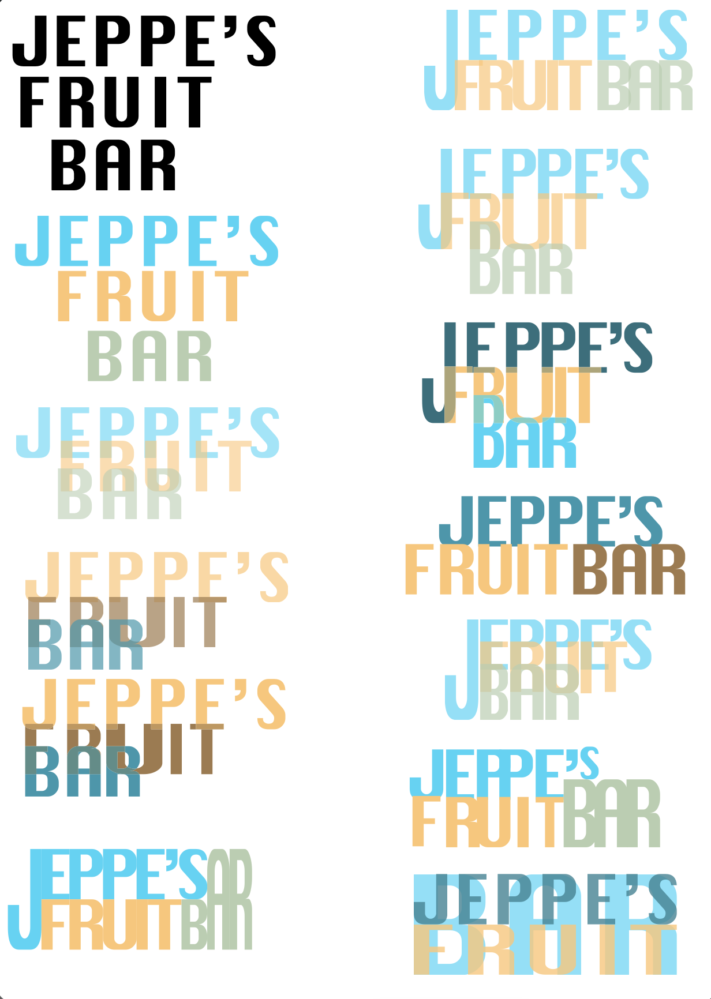
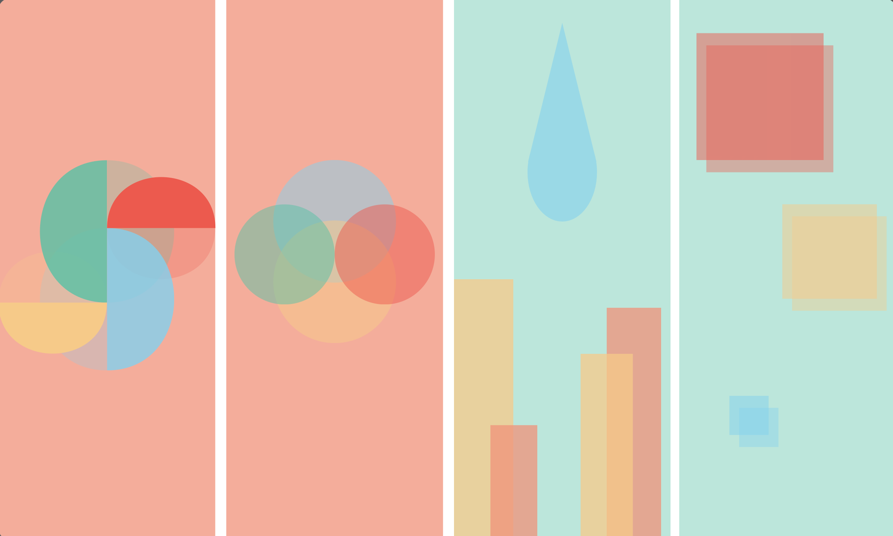
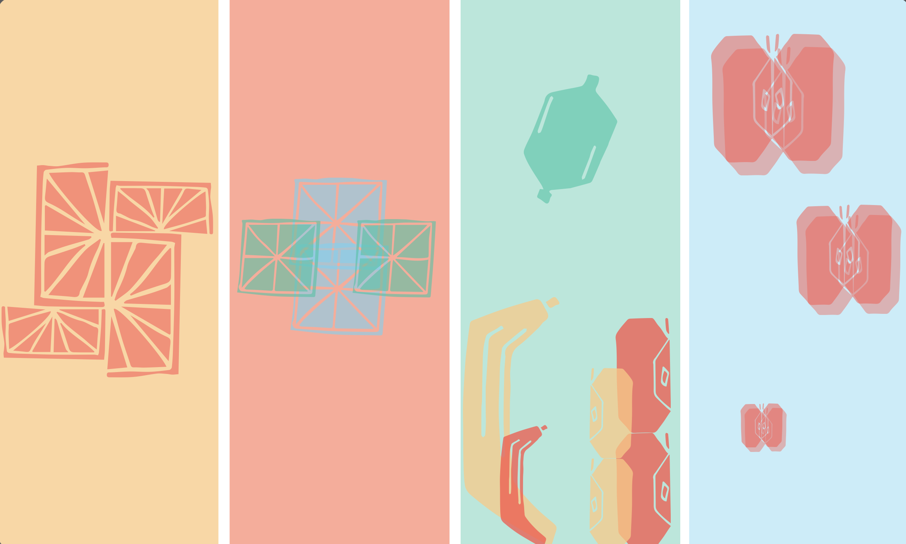

De Opdracht
Voor het vak Vormgeving kreeg ik de opdracht om een single-page website te ontwerpen voor mijn favoriete eten of drinken. Het onderwerp dat ik koos was fruit, met als concept Jeppe's Fruit Bar. De grootste uitdaging van deze opdracht was de visuele beperking: het gehele ontwerp moest worden uitgevoerd in de specifieke, toegewezen stijl layering & overprinting (het grafische effect waarbij overlappende kleuren mengen).
Mijn leerdoelen in dit project:
- De basisprincipes van visuele vormgeving toepassen.
- Balans vinden tussen vorm, kleur en typografie in een web-layout.
- Het succesvol toepassen van de Gestaltwetten: de wet van de eenvoud, de wet van de voor- en achtergrond, en de wet van de nabijheid.
Het Proces
Dit project bestond uit een iteratief ontwerpproces, waarbij ik telkens nieuwe elementen heb geschetst, getest en verfijnd om tot het uiteindelijke single-page resultaat te komen.
1. Inspiratie & Kleur
Ik ben gestart met een visueel onderzoek naar de 'layering & overprinting' stijl om de kenmerken goed te begrijpen. Op basis hiervan heb ik een digitaal kleurenpalet samengesteld met frisse, fruitige kleuren die goed met elkaar konden mengen.


2. Vorm & Iconografie
Omdat het een fruitbar was, heb ik in Illustrator zelf vector-iconen ontworpen voor de verschillende soorten fruit. Hierbij hield ik de vormen bewust simpel (wet van de eenvoud), zodat het layering-effect later niet te chaotisch of onleesbaar zou worden.

3. Layout & Typografie Experimenten
Om de compositie van de pagina te bepalen, ben ik offline begonnen met tientallen ruwe schetsen op papier voor mogelijke patronen en indelingen. Vervolgens ben ik digitaal gaan experimenteren met de typografie van het logo, waarbij de overprinting-stijl een grote rol speelde om direct de toon te zetten bovenaan de website.


4. Achtergrond Iteraties
Voor de achtergrond van de single-page layout heb ik verschillende richtingen verkend. Ik testte lay-outs met abstracte geometrische vormen en lay-outs waarbij ik de zelfgemaakte fruit-iconen als een herhalend, overlappend patroon gebruikte.
UX Inzicht: Tijdens dit proces kwam ik erachter dat deze drukke patronen de leesbaarheid van de daadwerkelijke tekst en content erg in de weg zaten. De achtergrond vroeg te veel aandacht.


5. Het Eindresultaat
Om de wet van de voor- en achtergrond beter toe te passen en de gebruiksvriendelijkheid (leesbaarheid) te waarborgen, ben ik afgestapt van de drukke patroon-achtergronden.
In het definitieve ontwerp heb ik gekozen voor grote, abstracte kleurvlakken die subtiel achter de tekst langs lopen. Dit zorgt ervoor dat de content (het menu en de iconen) de juiste focus krijgt (wet van de nabijheid). Als laatste stap heb ik het complete design in drie verschillende kleursamenstellingen getest om de beste balans en sfeer te vinden.